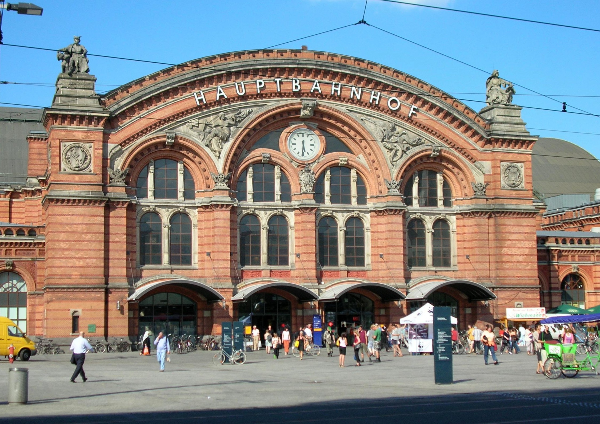
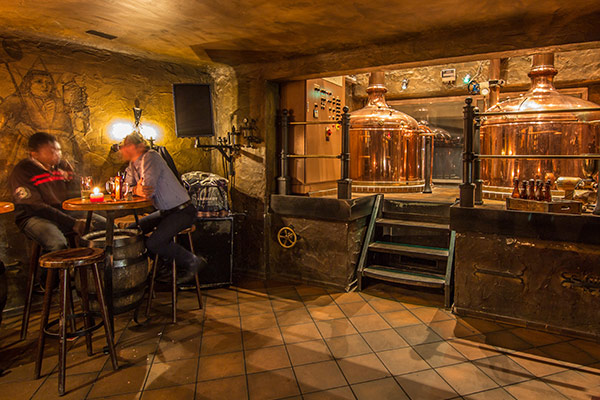
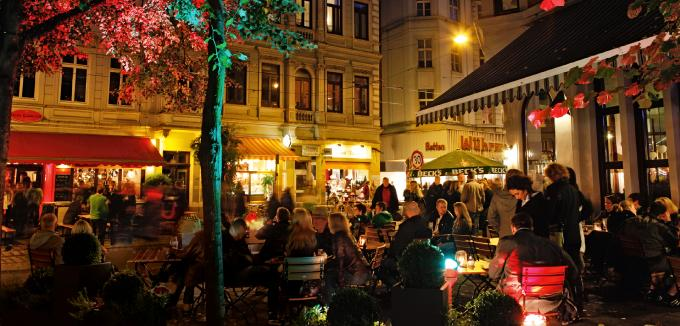
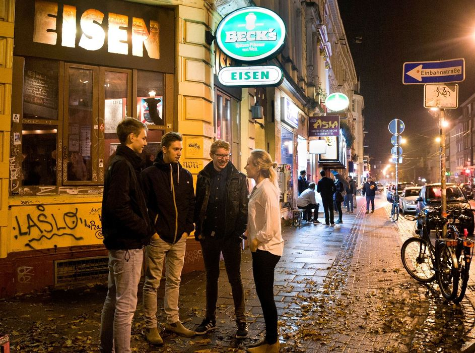
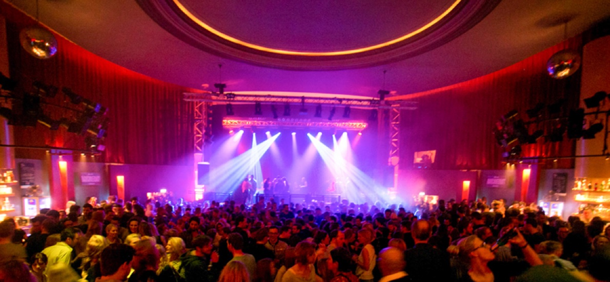
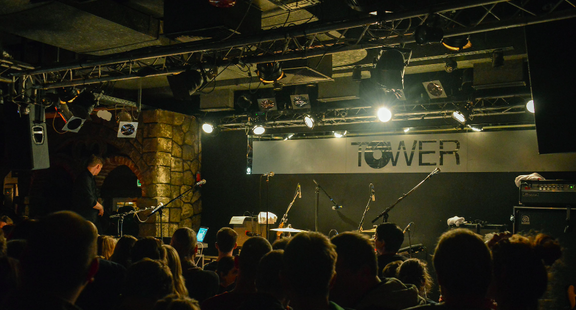
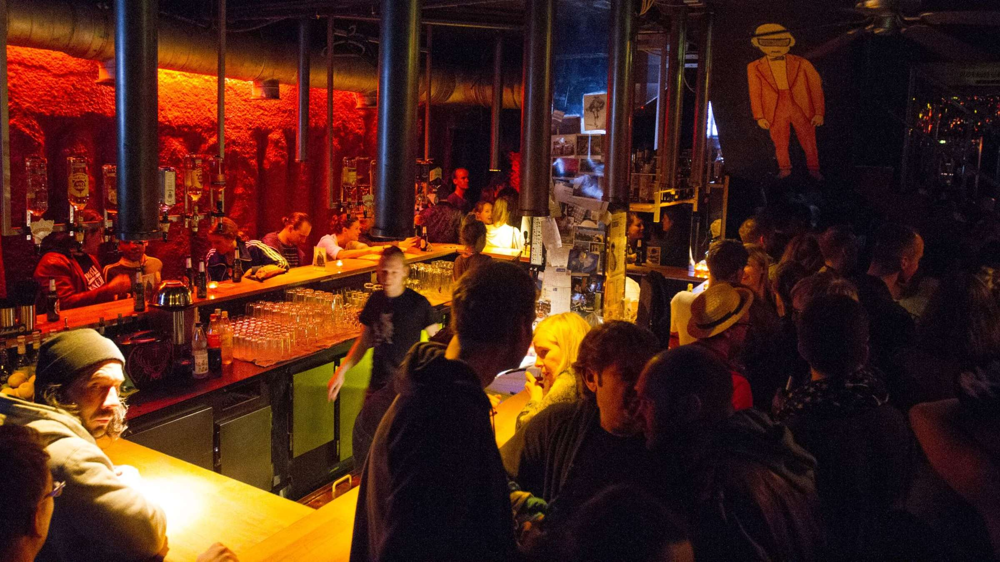

City centre
After a 10 minutes walk you’re in the city centre. It’s time to take out your camera: the Bremen’s Roland and the awesome town hall belong to UNESCO World Heritage!
Bremen's first train station was opened in 1847 on the site of today's station, on the line to Hanover. Since then and as everywhere in Germany, it remains as a meeting point for every homeless in the city.
After a 10 minutes walk you’re in the city centre. It’s time to take out your camera: the Bremen’s Roland and the awesome town hall belong to UNESCO World Heritage!
Closeby you’ll find the most popular and obligatory photo. Do you remember the fairytale by the Brothers Grimm? Say hi to the Bremen Town Musicians.
Don’t forget to visit the Schnoor quarter. You can take a short walk into that medieval old town and visit some of the local shops.
You just have to follow the Böttcherstrasse directly to the Shüttinger brewery and enjoy it’s german flair.
Maybe you visit the city in a Bundesliga weekend and Werder is playing home. I definitely recommend you to watch a match there. The atmosphere will amaze you. And luckily they even win a match…
Night is young, so take a walk in Viertel and mix with the most hipster neighborhood in the city. If you still have power, there are some cool discos to visit.
    